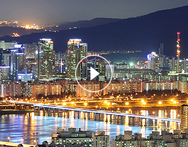
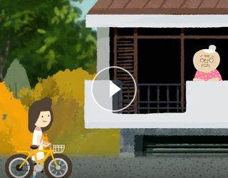

주요 컨텐츠
영상으로 본 서울
- 
-
서울특별시 비전 영상
2016년 8월
-
서울시 대표 비전영상
▶ 해설자 : 한도시의 위대함은 어떻게 결정될까요. 한도시가 우리 서울이 위대해지려면 무엇보다 시민의 삶과 생명을 우선시해야합니다. 그리고 혁신적인 성장 동력으로 시대의 지평을 열어가야 하지요. 그 힘은 사람 시민에게서 나와야하고 위대한 도시 서울은 그렇게 사람중심의 서울이 되어야하는 것입니다. 안전한 도시 ▶ 김준호 성북경찰서 길음 지구대/경사 : 사람을 근본으로 하는 인본행정 그 첫째는 안전입니다. ▶ 해설자 : 천만인구의 도시 서울은 예상치 못한 재난 재해 위험이 항상 존재합니다. 그러니 안전을 실현하기 위한 사회전반의 합의와 약속은 무엇보다 소중하지요. 서울은 이러한 합의와 약속의 과정을 거쳐 안전예산을 확보하고 현장을 중심으로 제도를 개선하였습니다. ▶ 강기수 주부 : 또한 중요한 것은 ▶ 유양숙 마을활동가 : 아이들이 안전한 ▶ 이주양 주부 : 어린이 안전도시 서울이 되는 것 입니다. ▶ 해설자 : 꿈이 있는 곳입니다. 특히 어린이 교통사고와 관련해서는 구체적인 목표를 이뤄나갈 것입니다 (화면설명 시작)어린이출연자 : 정홍민, 정호영, 임상우, 윤지연, 김동환, 홍세은, 홍예은, 김규림 어린이(화면설명 끝) 해설자 : 서울의 경우 시민주거의 안정 역시 (화면설명 시작)엄성흠 연구원/ 고려대학교스포츠과학(화면설명 끝) ▶ 김혜진 전 스피드스케이트 선수 : 시민들의 안정적인 삶의 큰 전제조건입니다. ▶ 해설자 : 전월세 대란의 원인으로 지적되는 소형주택 공급 부족문제 해결을 위해 서울시는 다시 한 번 힘을 내겠습니다. (화면설명 시작)박성호 어린이 임은선 엄마 박서아 어린이 박경덕 아빠 박성윤 어린이(화면설명 끝) 따뜻한 도시 ▶ 해설자 : 전 세계 도시는 섬세한 지원을 필요로 하는 분들이 많습니다. 서울 역시 예외는 아니죠. ▶ 허덕수 어르신 : 이 역시 해답은 현장에 있습니다. ▶ 유민 단국대학교 체육교육학과 : 이제 복지도 현장으로 찾아가야 합니다. ▶ 해설자 : 개별적 상황에 맞는 실질적인 지원이 이루어져야 합니다. 단순한 물질적 지원에서 시민의 존엄을 세우고 시민 삶의 전반을 응원할 수 있는 제도적 마련이 필요합니다. 지역의 복지와 돌봄 의료와 교육 문화자원 등이 잘 연계되어서 삶을 살뜰하게 살펴야하는 것입니다. (화면설명 시작)정주희 건강가정사. 청정은 어린이(화면설명 끝) ▶ 해설자 : 베이비부머 세대를 위해서는 별도의 제도가 마련되어야 합니다. 이는 어르신 인구와 잠재적 어르신 인구가 늘어날 서울시를 위해서는 꼭 필요한 일이겠습니다. (화면설명 시작)안무현 공무원. 김향분 주부. 임영희 주부. 이상숙 상담사(화면설명 끝) ▶ 해설자 : 또한 서울이 간과할 수 없는 것 중 하나는 여성 일자리입니다. 여성들의 일자리는 성 평등과 여성복지의 기초가 될 뿐 아니라 서울의 내일을 여는 새로운 성장 동력이 될 것이기 때문입니다 (화면설명 시작)김선지 두컨셉/디자이너. 박지현 두컨셉/대표이사((화면설명 끝) 꿈꾸는 도시 ▶ 박기완 대학생 : 도시는 늘 새로운 성장 동력을 필요로 합니다. ▶ 해설자 : 이제 대한민국 경제 중심도시 서울은 창조경제의 메카가 될 것입니다. 서울의 5대 창조경제 클러스터들은 지역별 성장 엔진이 될 것입니다. 또한 3대 아시아 지식기반 허브를 구축하여 글로벌 경제 서울의 위상을 높여나갈 것입니다. 지난 2년여 동안 서울의 사회적 경제는 그 뿌리를 내려 왔지요. 이제 지역에 기반을 둔 12개의 사회적 경제 클러스터들은 서울의 혁신적 성장에 기여할 것입니다. (화면설명 시작)김정혜 사회적경제지원센터 경영지원팀 / 매니저((화면설명 끝) ▶ 해설자 : 그뿐인가요 위대한 도시 서울로 가는 길에 있어 간과할 수 없는 것은 바로 문화의 힘이죠. 문화는 우리 시민과 도시의 존엄에 기여합니다. 문화의 힘, 혁신의 힘,. 창조의 힘으로 성장할 서울. 서울의 힘은 무엇보다 사람을 향해 있을 것입니다. (화면설명 시작)이태모 팀장 / Y-Kick Ent 김현수 대금연주(화면설명 끝) 숨쉬는 도시 ▶ 해설자 : 환경문제는 전 세계 도시 또한 서울이 증명하는 도전입니다. 우선 서울은 ▶ 도지은 직장인 : 건강하게 숨쉴 수 있는 도시가 되어야 합니다. (화면설명 시작)강민정 직장인(화면설명 끝) ▶ 해설자 : 이를 위해 베이징과 같은 동북아의 주요한 이웃 도시와 협력해야지요. 중국발 미세먼지 예방 및 대책을 위한 협력을 강화해야 합니다. 더불어 숲이 있는 도시 생명이 숨쉬는 도시가 되어야 하지요. (화면설명 시작)차동현 요리사 .김다은 대학생(화면설명 끝) ▶ 해설자 : 시민 가까이 서울의 푸르른 숲 또한 성장해 나갈 것입니다. 근본적으로는 에너지 문제에 대비해야 하는데요. 서울은 대체에너지 사용을 통해 에너지 소비도시에서 생산도시로 전환해 나갈 것입니다. 시민 여러분 또 서울을 사랑하는 모든 분들께서는 숨쉬는 도시 서울을 마음껏 누리시기 바랍니다. 위대한 도시 서울은 혼자서는 이룰 수 없습니다. 이는 무엇보다 서울이라는 도시는 시민이 시장이며 중요한 것은 성장의 속도가 아니라 방향이기 때문입니다. 시민 여러분의 힘으로 도시가 안전하고 복지가 따뜻하며 경제와 문화가 꿈꾸고 환경이 숨쉬는 서울 사람이 중심인 서울 시민이 행복한 서울이 될 것입니다. 그렇게 우리의 서울은 더욱 아름답고 위대한 도시가 될 것입니다. 영상제작에 참여해주신 시민여러분께 진심으로 감사드립니다.


- 
-
"설이"의 서울 나들이
2016년 8월
-
"설이의" 서울 나들이
▶ 설이 : 안녕하세요. 저는 설이라고 해요. 오늘은 오랜만에 서울나들이 하는 날. 이웃집 할머니는 요즘 웃음이 떠나지 않으세요. 서울시의 생활임금제도 때문이래요. 아 그리고 찾아가는 복지서비스가 시행돼서 더 힘이 나신다고 해요. 아! 이렇게 공기가 상쾌한 건 초미세먼지가 20%나 줄었기 때문이래요. 여기는 제 동생이 다니는 초등학교인데요. 학교 화장실이 집보다 좋다고 자랑을 해요. 이상한 녀석 서울시 보행로는 저희 가족 모두 손잡고 걸을 만큼 넓어졌어요. 우와 외국인 관광객으로 가득하네요. 한해에 2,000만이 찾는 세계적인 관광도시 같죠? 후흣 어 어 저기 사고가 났나 봐요. 사고현장에 황금시간 목표제가 시행된 덕분에 저렇게 금방 119 구조대가 도착 한답니다. 역시~ 여기는 아빠가 일하시는 창조경제단지 멋지죠. 여성이나 청년 일자리가 창출돼서 경제 활성화에도 큰 역할을 한 대요. 서울의 마을 이 곳 저 곳도 둘러 봤어요. 제가 어렸을 때 살던 동네예요. 이제는 다 부수고 재개발 하지 않아도 살기 좋은 곳이 되고 있네요. 도심 속 공원은 언제 봐도 반가워요. 에구구구 다리야. 우와! 노을 지는 서울의 모습. 아 정말 너무 아름다워요. 2018년 달라진 서울의 모습 기대되시죠. 우리 4년 뒤에 또 만나요. 안녕. 함께 만들어 가는 사람이 중심인 서울. 시민이 행복한 서울
-
시민청방문 비디오 영상
2016년 8월
-
시민청 비디오 영상
▶ 정영희(39) 서울시 은평구 : 바깥이 많이 더운데 여기는 좀 시원하고 아이들이 구경할 거리도 많고 전시물도 되게 많고요 특별히 좋아 하는 거 같아요. 이 공간을요 ▶ 윤현(25) 서울시 마포구 : 시청이라는 곳이 공무원만을 공간인 줄 알았는데 이렇게 오니까는 시민을 위한 공연도 하고 카페도 있고 이런 게 되게 인상적이더라고요 (자막 시작)이들이 말하는 장소는? 시민들을 위한 공간 ‘시민청’ 시민청이 여름방학을 맞아 미술관으로 탈바꿈했다. 2014 시민청 예술축제 시끌벅적 미술관(자막 끝) ▶ 최정필 서울시 시민청 운영담당 : 이번 전시는 작가들과 또 민간단체 그리고 운영위원들의 모두가 재능기부로 참여를 했다는 거에 대해서 큰 의미가 있고요. 시민청 공간 특징에 맞게끔 맞춤형의 아트 페스티벌로 진행한다는 거에 대해서 그 의미가 있습니다. (자막 시작) 시끌벅적 미술관 개막식. 2014 시민청 예술축제. 시끌벅적 미술관 미리 둘러보기! 알록달록 팝아트. 마음으로 만든 조형전. 미디어 아트 전시 ‘잇다’. 이야기를 담은 그림전. 즐길거리와 볼거리가 언제나 가득한 ‘시민청’. 시민청으로 떠나보자(자막 끝)